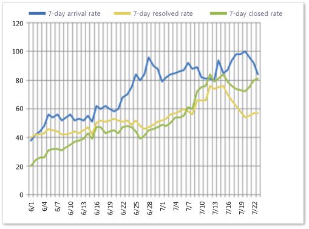
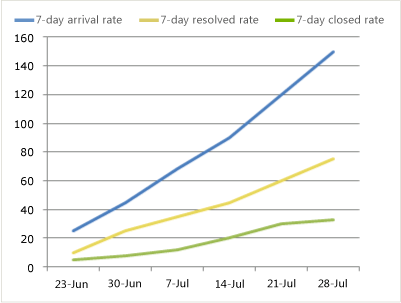
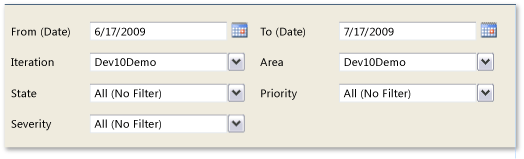

You can use the Bug Trends report to help track the rate at which your team is discovering and resolving bugs. This report shows a rolling or moving average of bugs being reported, resolved, and closed over time. When you manage a large team or a large number of bugs, you can monitor the Bug Trends report weekly to gain insight into how well the team is finding, resolving, and closing bugs.
For information about how to access, refresh, or manage reports, see Reports (GovDev).
|
|
|---|
|
This report requires that the team project collection that contains your team project
was provisioned with SQL Server Reporting Services. This report is not available
if
|
|
In this topic |
You can use this report to answer the following questions :
|
Required Permissions
To view the report, you must be assigned or belong to a group that has been assigned the Browser role in SQL Server Reporting Services. For more information, see Add Users to Team Projects or Managing Permissions.
 Data
in the Report
Data
in the Report
The Bug Trends report calculates a rolling average of the number of bugs that the team has opened, resolved, and closed based on the filters that you specify. The rolling average is based on the seven days before the date for which it is calculated. That is, the report averages the number of bugs in each state for each of the seven days before the date, and then the result is divided by seven. The data is derived from the data warehouse.
The following illustration displays an example of the Bug Trends report.
This report displays up to three line graphs, and each graph represents the rolling averages of the numbers of activated, resolved, and closed bugs.
You can filter the report in the following ways:
-
Change the start and end dates for the report.
-
Filter the bugs that are counted in the report by specifying iteration and area paths or bug state, priority, or severity.
For more information, see Filtering the Reportlater in this topic.
Required Activities for Tracking Bugs
For the Bug Trends report to be useful and accurate, the team must perform the following activities:
-
Define bugs, and specify their Iteration and Area paths.
-
Update the State of each bug as it is fixed, verified, and then closed.
-
Specify the Priority and Severity of each bug during triage.
You can use the Triage workbook to quickly update the iteration, area, state, priority, and severity of bugs. For more information, see Triage Workbook.
Setting
the Duration of the Sprint or Iteration
To understand the bug trends for your current iteration, the start and end dates for the report must match those of your current iteration cycle.
To change the duration of the iteration
-
Next to Iteration Start (Date) or Iteration End (Date), click the calendar icon, and then click a date.
-
Click View Report.
Interpreting
the Report
You should expect bug rates to vary based on where you are in your product development cycle. The team should find fewer bugs in early iterations than in later iterations. The team should close the most bugs in iterations that are near the end of a product cycle.
You interpret bug rates best by reviewing them relative to all of the current team project activities and the other metrics that the Bug Status and Reactivations reports provide. For example, the team might find bugs especially quickly in poorly written code, in newly integrated code, with improved testing, or during an exceptional event such as a bug bash. On the other hand, bugs are more difficult to find in a high quality product and with ineffective testing. You can use the metrics for code coverage, code churn, and test rates to help further assess the meaning of the bug trends.
As the product stabilizes toward the end of a product cycle, the team should find bugs less frequently.
The Bug Trends report might show one or more of the indicators that the following table describes in the left-hand column. You can review the questions in the right-hand column for areas to address in more detail.
|
Indicator |
Questions to ask |
|---|---|
|
The team is finding about the same number of bugs in successive time periods. If the team finds the same number of bugs week after week or iteration after iteration, you might investigate the underlying cause. Early in the testing cycle, the tests might not be rigorous or advanced enough to find many bugs. In early iterations, this situation is expected. However, as the product matures, tests should exercise broader scenarios and integrations. |
|
|
The team is finding many bugs in each time period. The team might find bugs easily in sloppy code, in newly integrated code, with effective testing, or during a specific event, such as a bug bash. |
|
|
The team is finding few bugs in each time period. The team might struggle to find bugs in a high-quality solution or with ineffective testing. |
|
|
The team is resolving many bugs in each time period. A high resolve rate usually indicates that the team is making good progress. |
|
|
The team is resolving bugs quickly but not closing them. Team members who are assigned to verify bug fixes might be spread too thin, or different priorities might keep those team members from closing resolved bugs. |
|
Healthy Version of Report
A healthy Bug Trends report shows that the team finds more bugs at the start of a development cycle and fewer bugs toward the end of a release. The team should resolve and close more bugs toward the end of the project.
When the team resolves bugs faster than it finds them, the number of active bugs will start to decrease. When the team starts to find fewer bugs, the product is stabilizing.
Unhealthy Version of Report
An unhealthy Bug Trends report might show that the team is finding bugs more quickly as the ship date approaches and resolving bugs more slowly. In this situation, the team's bug backlog is growing because bugs are not getting fixed, and you might want to investigate the causes. The following illustration shows a report for a team that is finding many bugs, resolving fewer bugs than it finds, and closing fewer bugs than it resolves.

Filtering
the Report and Changing the Display
You can filter the Bug Trends report or change its display in the following ways:
-
Change the start and end dates for the report.
-
Filter the bugs that are counted in the report by specifying iteration and area paths, state, priority, or severity.
The following illustration shows the available filters.
To filter the bugs that are counted in the report
-
Perform one or both of the following actions:
-
In the Iteration and Area lists, select the check box of each iteration or product area to include.
-
In the State, Priority, or Severity lists, select the check box of each state, priority, and severity to include.
-
-
Click View Report.